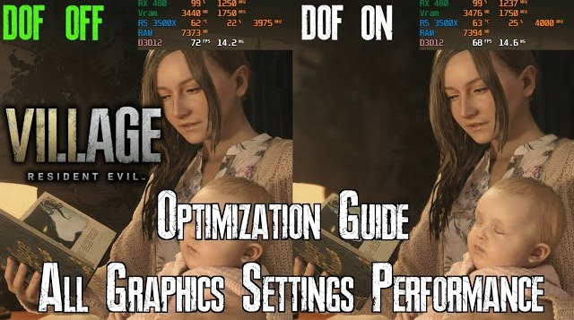

Resident Evil: Village

Optimised settings for Resident Evil: Village:
If all you need are some quick graphics tips on how to improve your frame rate, here are the best settings to tweak in the game's Display Settings to help give your PC a boost:
Youtube Guide
Settings
Image Quality: 1.2
🛈 Upscales internal resolution, has high impact on performance
FidelityFX CAS: On
Anti-Aliasing: TAA or Off (Subjective)
🛈 You can turn off Anti-Aliasing, but to get rid of artifacts you'll need to increase internal res. from prev. setting
Variable Rate Shading: Balanced
Texture Quality: High (Highest VRAM Can Handle)
Texture Filter Quality: Anisotropic 16x
Mesh Quality: Max
Ambient Occlusion: SSAO
Screen Space Reflections: On
Volumetric Lighting: Medium
Subsurface Scattering: Off
Shadow Quality: High Or Medium (Depending On VRAM)
Contact Shadows: On
Shadow Cache: On
Bloom: On